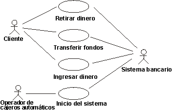

Visión general
La calidad del software se valora junto con diferentes dimensiones que incluyen la fiabilidad, la función y el
rendimiento (consulte el apartado Concepto:
Dimensiones de calidad). El modelo de análisis de carga de trabajo (consulte el apartado Producto de trabajo: modelo de análisis de carga de trabajo) se crea
para identificar y definir las diferentes variables que afectan o influencian el rendimiento de una aplicación o
sistema y las medidas necesarias para valorar el rendimiento. Los perfiles de carga de trabajo que componen el modelo
representan las condiciones candidatas que deben simularse contra los elementos del destino de la prueba debajo de una
o más configuraciones de entorno de prueba. El modelo de análisis de carga de trabajo lo utilizan los roles siguientes:
-
el analista de pruebas (consulte el apartado Rol:
Analista de pruebas) utiliza el modelo de análisis de carga de trabajo para identificar las ideas de prueba y
definir los casos de prueba para diferentes pruebas
-
el diseñador de pruebas (consulte el apartado Rol:
Diseñador de pruebas) utiliza el modelo de análisis de carga de trabajo para definir un enfoque de prueba
apropiado e identificar las necesidades de comprobabilidad para las diferentes pruebas
-
el verificador (consulte el apartado Rol:
Verificador) utiliza el modelo de análisis de carga de trabajo para comprender mejor los objetivos de la prueba
a implementar, ejecutar y analizar su ejecución adecuadamente
-
el representante del usuario (consulte el apartado Rol:
Interesado) utiliza el modelo de análisis de carga de trabajo para valorar la adecuación de la carga de
trabajo, y las pruebas necesarias para valorar con eficacia el comportamiento de los sistemas contra el modelo de
análisis de carga de trabajo
La información que se incluye en el modelo de análisis de carga de trabajo se centra en las características y los
atributos de las áreas principales siguientes:
-
Casos de ejemplo de caso de uso (o instancias, consulte el apartado Producto
de trabajo: Caso de uso) que se ejecutarán durante las pruebas
-
Actores (consulte el apartado Producto de
trabajo: Actor) que se simulará / emulará durante las pruebas
-
Perfil de carga de trabajo - representa el número y el tipo de instancias de actor simultáneas, casos de ejemplo de
caso de uso ejecutados por estas instancias de actor y las respuestas en línea o asociadas con cada caso de ejemplo
de caso de uso.
-
La configuración de entorno de prueba (real, simulada o emulada) que se utilizará para ejecutar y evaluar las
pruebas (consulte el apartado Producto de trabajo: Configuración de entorno de prueba. Consulte
también Producto de trabajo: Documento de arquitectura de software, la
vista de despliegue, que debería formar la base de la Configuración de entorno de prueba)
Las pruebas deben considerarse para medir y evaluar las características y los comportamientos del destino de la prueba
cuando funcionen bajo diferentes cargas de trabajo. El diseño satisfactorio, la implementación y la ejecución de estas
pruebas requiere la identificación de los datos realistas y excepcionales de estos perfiles de carga de trabajo.
Dos aspectos de los casos de uso que se consideran para la selección de casos de ejemplo para este tipo de pruebas:
-
Los casos de uso críticos contienen los casos de ejemplo del caso de uso que
se medirán y evaluarán en las pruebas
-
Los casos de uso significativos contienen casos de ejemplo de caso de uso
que pueden afectar al comportamiento de los casos de ejemplo de caso de uso críticos
No todos los casos de ejemplo de caso de uso que se implementan en el destino de la prueba son necesarios para estas
pruebas. Los casos de uso críticos contienen los casos de ejemplo de caso de uso que serán el centro de la prueba - es
decir, se medirán y evaluarán sus comportamientos.
Para identificar los casos de uso críticos, identifique los casos de ejemplo de caso de uso que cumplen uno o más de
los criterios siguientes:
-
requieren las medidas y la valoración basadas en el perfil de carga de trabajo
-
lo ejecutan con frecuencia uno o más usuarios finales (instancias de actor)
-
que represente un elevado porcentaje de utilización del sistema
-
que consuma recursos del sistema significativos
Liste los escáner de caso de uso críticos para incluirlos en la prueba. Como se están identificando, el flujo de
sucesos de caso de uso debe revisarse. Empiece identificando la secuencia específica de sucesos entre el actor (tipo) y
el sistema cuando se ejecuta el caso de ejemplo de caso de uso.
Además, identifique (o compruebe) la información siguiente:
-
Las condiciones previas de estos casos de uso, como el estado de los datos (qué datos deben / no deben existir) y
el estado del destino de la prueba
-
Los datos que pueden ser constantes (lo mismo) o que deben diferir de un caso de ejemplo al siguiente
-
La relación entre el caso de uso y otros casos de uso, como la secuencia en que los casos de uso deben efectuarse.
-
La frecuencia de ejecución del caso de ejemplo de caso de uso, que incluye características como el número de
instancias simultáneas del caso de uso y el porcentaje de la carga total que cada caso de ejemplo coloca en el
sistema.
A diferencia de los casos de ejemplo de caso de uso críticos, que son el centro principal de la prueba, los casos de
ejemplo de caso de uso significativos son los que pueden afectar a los comportamientos de rendimiento de los casos de
ejemplo de caso de uso críticos. Los casos de ejemplo de caso de uso críticos incluyen los que cumplen uno o más de los
criterios siguientes:
-
deben ejecutarse antes o después de ejecutar un caso de uso crítico (una condición previa o posterior dependiente)
-
lo ejecutan con frecuencia una o más instancias de actor
-
representan un elevado porcentaje de utilización del sistema
-
requieren recursos del sistema significativos
-
se ejecutarán de forma rutinaria en el sistema desplegado mientras se ejecutan los casos de ejemplo de caso de uso
críticos, como el correo electrónico o la impresión de fondo
A medida que se listan los casos de ejemplo de los casos de uso significativos, revise el flujo de sucesos del caso de
uso y la información adicional tal como se ha hecho anteriormente para los casos de ejemplo de caso de uso críticos.
Las pruebas de rendimiento satisfactorias requieren la identificación no sólo de los actores que ejecutan los casos de
ejemplo de caso de uso críticos y significativos, y también deben simular / emular el comportamiento del actor. Es
decir, una instancia de un actor puede interactuar con el destino de la prueba diferentemente (tardar más en responder
a las solicitudes, entrar diferentes valores de datos, etc.) mientras ejecuta el mismo caso de ejemplo de caso de uso
que otra instancia de ese actor. Considere los casos de uso sencillos siguientes:

Actores y casos de uso en una máquina cajero automático.
La primera instancia del actor "Cliente" que ejecuta un caso de ejemplo de caso de uso puede ser un usuario
experimentado de cajero automático, mientras que otra instancia del actor "Cliente" puede ser un usuario sin
experiencia de cajero automático. El cliente experimentado rápidamente navega a través de la interfaz de usuario del
cajero automático y pierde poco tiempo leyendo cada solicitud, y en su lugar, pulsando los botones por rutina. El
cliente sin experiencia, sin embargo, lee todas las solicitudes y dedica un tiempo adicional a la interpretación de la
información antes de responder. Los perfiles de carga de trabajo realistas reflejan esta diferencia para asegurar una
valoración precisa de los comportamientos del destino de la prueba.
Empiece identificando los actores para cada caso de ejemplo de caso de uso identificado anteriormente. A continuación,
identifique los diferentes perfiles de actor que pueden ejecutar cada caso de ejemplo de caso de uso. En el ejemplo del
cajero automático anterior, podemos tener los estereotipos de actor siguientes:
-
Usuario de cajero automático con experiencia
-
Usuario de cajero automático sin experiencia
-
La cuenta del usuario del cajero está "dentro" de la red bancaria de cajeros (la cuenta del usuario está en el
banco propietario del cajero)
-
La cuenta del usuario de cajero automático está fuera de la red del banco de cajeros automáticos (banco de la
competencia)
Para cada perfil de actor, identifique los diferentes atributos y sus valores como por ejemplo:
-
Tiempo de pensamiento - el periodo de tiempo que un actor tarda en responder a las solicitudes individuales del
destino de la prueba
-
Velocidad de escritura - la velocidad a la que el actor interactúa con la interfaz
-
Ritmo de solicitud - la velocidad a la que el actor realiza solicitudes al destino de la prueba
-
Factor de repetición - el número de veces que un caso de uso o una solicitud se repite en una secuencia
-
Método de interacción - el método de interacción utilizado por el actor, como la utilización del teclado para
entrar valores, pulsar el tabulador hasta un campo, utilizar las teclas de aceleración, etc., o utilizar el ratón
para "apuntar y pulsar", "cortar y pegar", etc.
Además, para cada perfil de actor identifique el perfil de carga de trabajo, especificando todos los casos de ejemplo
de caso de uso que ejecutan, y el porcentaje de tiempo o la proporción de esfuerzo gastado por el actor que ejecuta
estos casos de ejemplo. La identificación de esta información se utiliza para identificar y crear una carga realista
(ver Carga y Atributos de la carga a continuación).
Los atributos específicos y las variables de la Configuración de entorno de prueba que identifican exclusivamente el
entorno también se deben identificar, ya que estos atributos también impactan en la medida y la evaluación del
comportamiento. Estos atributos incluyen:
-
El hardware físico (velocidad de la CPU, memoria, caché de disco, etc.)
-
La arquitectura de despliegue (número de servidores, distribución del proceso, etc.)
-
Los atributos de la red
-
Otro software (y casos de uso) que se puede instalar y ejecutar simultáneamente con el destino de la prueba
Identifique y liste los atributos del sistema y las variables que se deben considerar para su inclusión en las pruebas.
Esta información se puede obtener de varias fuentes, que incluyen:
Como se ha indicado anteriormente, la carga de trabajo es un factor importante que afecta al comportamiento de un
destino de la prueba. Identificar con precisión el perfil de carga de trabajo que se utilizará para evaluar el
comportamiento de los destinos es crítico. Habitualmente, las pruebas que implican la carga de trabajo se ejecutan
varias veces utilizando diferentes perfiles de carga de trabajo, representando una variación de los atributos que se
describen a continuación:
-
El número de instancias de actor simultáneas que interactúan con el destino de la prueba
-
El perfil de los actores que interactúan con el destino de la prueba
-
Los casos de ejemplo de caso de uso ejecutados por cada instancia de actor
-
La frecuencia de cada caso de ejemplo de caso de uso ejecutado y con qué frecuencia se repite
Para cada perfil de carga de trabajo que se utiliza para evaluar el rendimiento del destino de la prueba, identifique
los valores de cada una de las variables anteriores. Los valores que se utilizan para cada variable en las diferentes
cargas se puede derivar observando o entrevistando actores o, desde el modelo de caso de uso empresarial si uno
está disponible. Es común que se defina uno o más de los perfiles de carga de trabajo siguientes:
-
Óptimo - un perfil de carga de trabajo que refleja las mejores condiciones de despliegue posibles, como un número
mínimo de instancias de actor interactuando con el sistema, ejecutando sólo los casos de ejemplo de caso de uso,
con software adicional mínimo y una carga de trabajo que se ejecute durante la prueba.
-
Medio (Normal AKA) - un perfil de carga de trabajo que refleja las condiciones de utilización medias anticipadas o
reales.
-
Hora punta instantánea - un perfil de carga de trabajo que refleja condiciones de utilización fuertes instantáneas
anticipadas o reales, que ocurren en periodos breves durante el funcionamiento normal.
-
Hora punta - un perfil de carga de trabajo que refleja condiciones de utilización fuertes anticipadas o reales,
como un número máximo de instancias de actor, ejecutando volúmenes elevados de casos de ejemplo de caso de uso, con
mucho software adicional y una carga de trabajo que se ejecuta durante la prueba.
Cuando las pruebas de carga de trabajo incluyen la prueba de tensión (consulte el apartado Concepto: Prueba de rendimiento y Técnica: Tipos de
pruebas), se deben identificar varias cargas adicionales, y cada una debe indicar aspectos específicos del sistema
en estados anormales o inesperados más allá de la capacidad normal esperada del sistema desplegado.
Las pruebas de carga de trabajo satisfactorias sólo se pueden alcanzar si las pruebas se miden y se evalúan los
comportamientos de carga de trabajo. Al identificar las medidas y criterios de carga de trabajo, deben considerarse los
factores siguientes:
-
¿Qué medidas deben realizarse?
-
Dónde están / cuáles son los puntos de medida críticos en el destino de la prueba / ejecución del caso de uso.
-
¿Cuáles son los criterios que se deben utilizar para determinar un comportamiento de rendimiento aceptable?
Medidas de rendimiento
Existen muchas medidas diferentes que se pueden efectuar durante la ejecución de la prueba. Identifique las medidas
significativas que se deben efectuar y justifique porqué son las medidas más significativas.
A continuación se listan los comportamientos de rendimiento más comunes controlados o capturados:
-
Estado de los scripts de prueba - una representación gráfica del estado actual, o del progreso de la ejecución de
la prueba
-
Tiempo de respuesta / rendimiento - medida (o cálculo) de los tiempos de respuesta o del rendimiento (habitualmente
indicado como transacciones por segundo).
-
Rastreos - capturar los mensajes / conversaciones entre el actor (script de prueba) y el
destino de la prueba, o el flujo de datos y/ o el flujo de proceso durante la ejecución.
Consulte el apartado Técnica:
Medidas clave de la prueba para obtener información adicional
Puntos de medida de rendimiento críticos
En las secciones Guiones de uso y Atributos de caso de uso anteriores, se indicó que no todos los casos de uso y sus
casos de ejemplo se ejecutan para la prueba de rendimiento. Del mismo modo, no todas las medidas de rendimiento se
realizan para cada caso de ejemplo de caso de uso ejecutado. Habitualmente, sólo los casos de ejemplo de caso de uso
específicos reciben medidas, o puede haber una secuencia específica de sucesos dentro de un caso de ejemplo de caso de
uso específico que se medirá para valorar el comportamiento de rendimiento. Hay que tener cuidado de seleccionar los
puntos de inicio y de final más significativos para medir los comportamientos de rendimiento. Los más significativos
son las secuencias más visibles de sucesos o las que pueden afectar directamente a través de cambios en el software o
el hardware.
Por ejemplo, en el cajero automático, en el caso de uso Retirar dinero que se ha identificado anteriormente, podemos
medir las características de rendimiento de toda la instancia de caso de uso, desde el punto donde el Actor inicia la
retirada, hasta el punto en que el caso de uso termina - es decir, el actor recibe la tarjeta bancaria y el cajero
automático está listo para aceptar otra tarjeta, tal como se muestra en la línea negra "Tiempo total transcurrido" del
diagrama siguiente:
Tenga en cuenta, sin embargo, que existen muchas secuencias de sucesos que contribuyen en el tiempo total transcurrido,
algunas de las cales podemos controlar (como leer la información de la tarjeta, verificar el tipo de tarjeta, iniciar
la comunicación con el sistema bancario, etc., elementos B, D y E anteriores), pero en otras secuencias, no tenemos
control (como el actor que entra su PIN o que lee las solicitudes antes de entrar la cantidad retirada, elementos A, C
y F). En el ejemplo anterior, además de medir el tiempo total transcurrido, mediremos los tiempos de respuesta de las
secuencias B, D y E, ya que estos sucesos son los tiempos de respuesta más visibles para el actor (y podemos afectarlos
a través del software / hardware para su despliegue).
Criterios de medida de rendimiento
Una vez que se han identificado las medidas de rendimiento críticas y los puntos de medida, revise los criterios de
rendimiento. Los criterios de rendimiento se indican en las especificaciones suplementarias (consulte el apartado Producto de trabajo: Especificaciones suplementarias). Si fuera
necesario, revise los criterios.
A continuación se muestran algunos criterios que se suelen utilizar para la medida del rendimiento:
-
tiempo de respuesta (respuesta en línea AKA)
-
índice de rendimiento
-
percentiles de respuesta
El tiempo de respuesta en línea, medido en segundos, o el índice de rendimiento de transacción, medido por el número de
transacciones (o mensajes) procesados es el criterio principal.
Por ejemplo, utilizando el caso de uso Retirar dinero, el criterio se indica como "sucesos B, D y E (consulte el
diagrama anterior) deben ocurrir en menos de 3 segundos (para un total combinado de 9 segundos)". Si durante las
pruebas, notamos que cualquiera de los sucesos identificados como B, D o E tardan más que el criterio indicado de 3
segundos, registraríamos una anomalía.
Las medidas de percentil se combinan con los tiempos de respuesta y/o los índices de rendimiento y se utilizan para
"omitir estadísticamente" las medidas que están fuera de los criterios indicados. Por ejemplo, el criterio de
rendimiento para el caso de uso ahora indica "para el 90º percentil, los sucesos B, D y E deben ocurrir en menos de 3
segundos ...". Durante la ejecución de la prueba, si medimos el 90 por ciento de todas las medidas de rendimiento
ocurren dentro de los criterios indicados, no se registran anomalías.
|